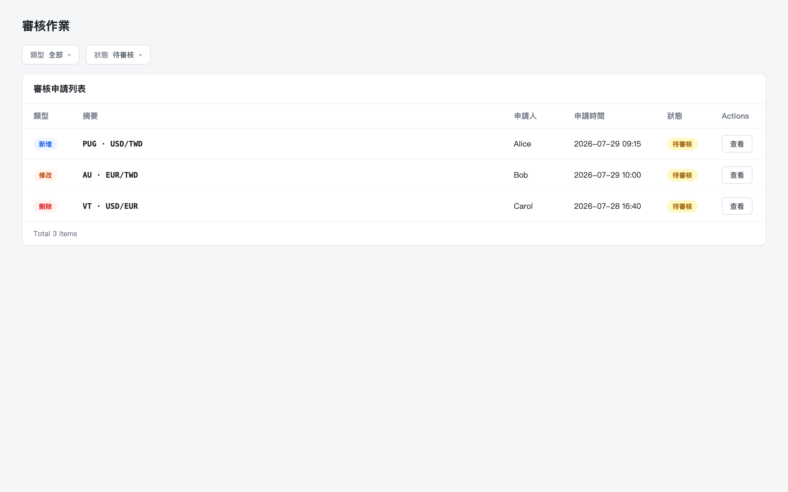
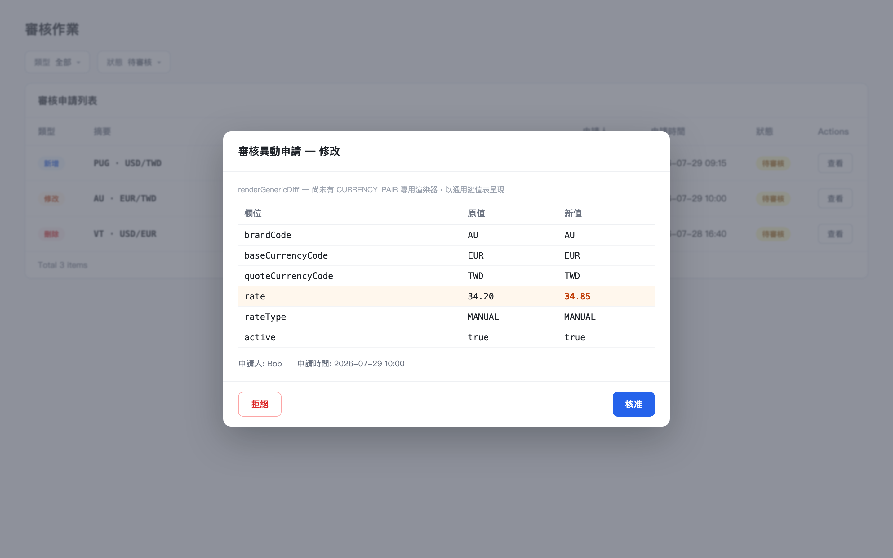
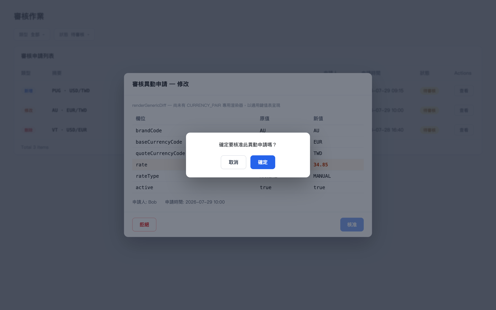
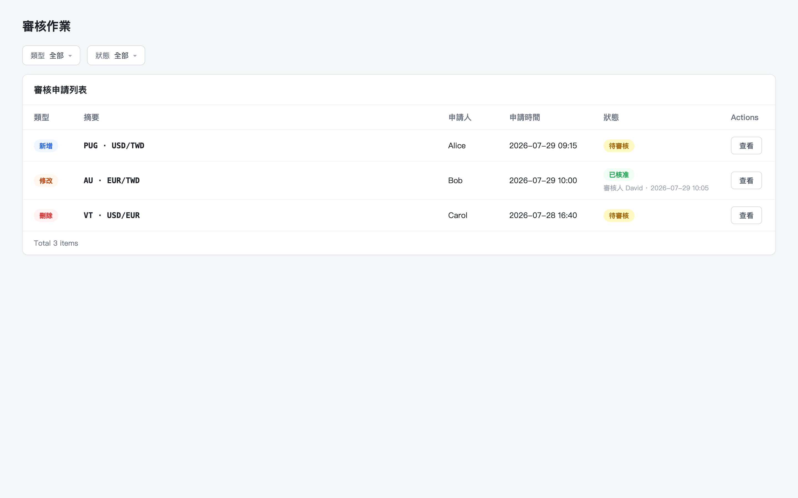
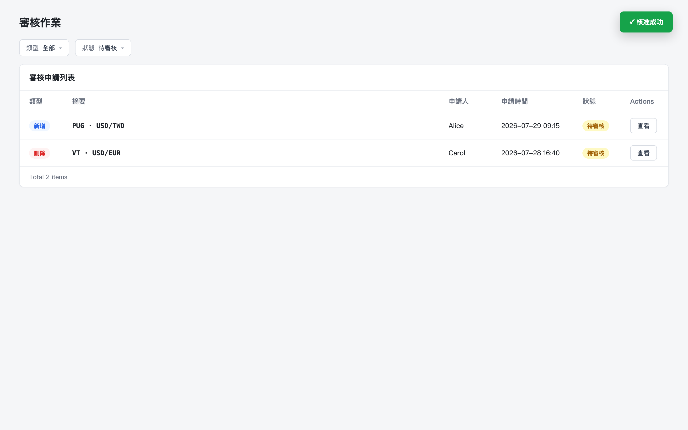

初始畫面：審核作業列表，狀態篩選為「待審核」，顯示 3 筆待審核申請（新增/修改/刪除）

點擊 Bob 這筆「修改」申請的「查看」：開啟審核異動申請 Modal，以 renderGenericDiff 通用鍵值表呈現 AU · EUR/TWD 的 rate 欄位異動（34.20 → 34.85）

點擊「核准」按鈕：彈出確認對話框「確定要核准此異動申請嗎？」

將「狀態」篩選切換為「全部」：AU · EUR/TWD 這筆已顯示為「已核准」並附審核人/審核時間，其餘申請仍為「待審核」

確認核准：呼叫核准 API 成功，顯示「核准成功」Toast，Modal 關閉，該筆申請自「待審核」列表移除